33 parts · 0 same · 6 close · 27 differs, as Designer found them on 11 November 2026
The pack: 388cc052f2a608a3bdbbba457e53e8686abd54e6. The build: 675d548be40aa4caf617323a172aa99d717073fa. Drawn at each part's phone size, 1.5× pixels.
Desktop Chromium with sample matches on both sides: not a phone, a live match, VoiceOver or motion.
In the rooms
Room B, your turn sheet 21
11 November 2026:DiffersThe room is shrunk to the screen’s width, with dark bands above and below, and people drawn smaller. The design fills the space between the bars (the owner’s “too zoom” decision). Pass is a flat tab, and the room’s own “Windows” control is missing.
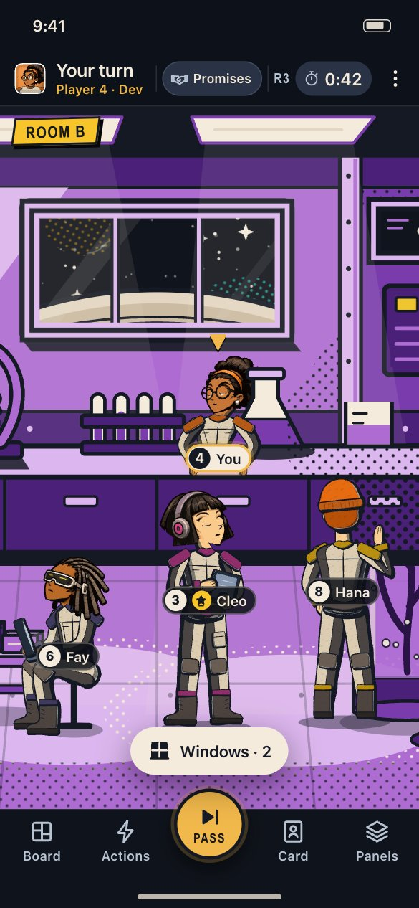
The pack
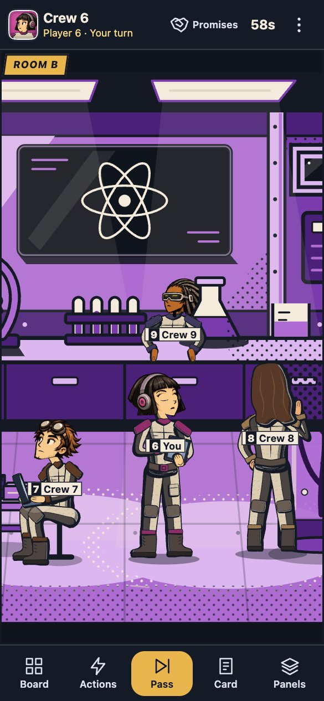
The build
How each side was drawn
The pack: /design/phone-ui/prototype/index.html?room=room-b&s=room&state=own&safe=47%2C34
The build: /?scenario=board&count=9&tuple=phone
Room A sheet 20
11 November 2026:DiffersShrunk the same way. The “Window · Hospital” control is missing.
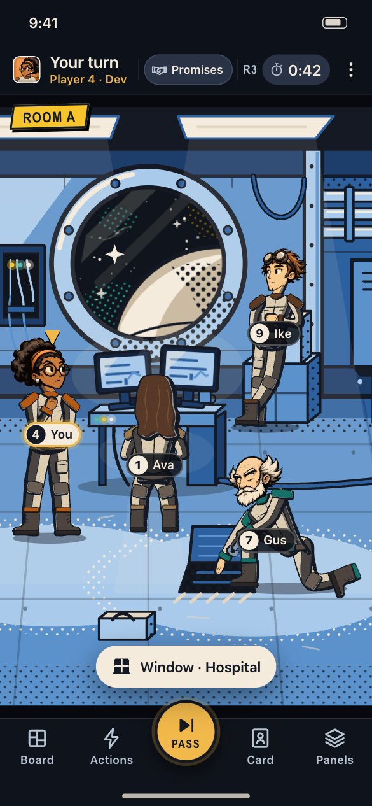
The pack
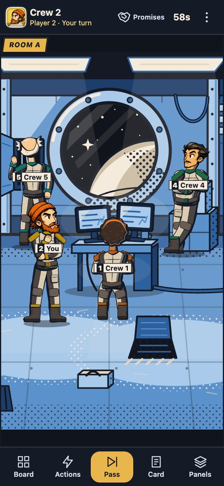
The build
How each side was drawn
The pack: /design/phone-ui/prototype/index.html?room=room-a&s=room&state=own&safe=47%2C34
The build: /?scenario=doctor&count=9&tuple=phone
Command Room sheet 22
11 November 2026:DiffersIt fills better, as its picture is taller, but the “Captain console” control is missing.
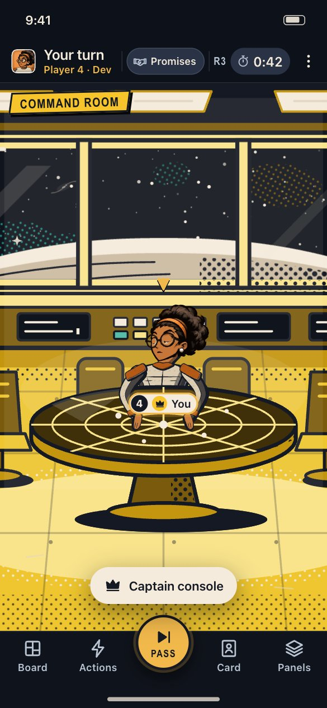
The pack
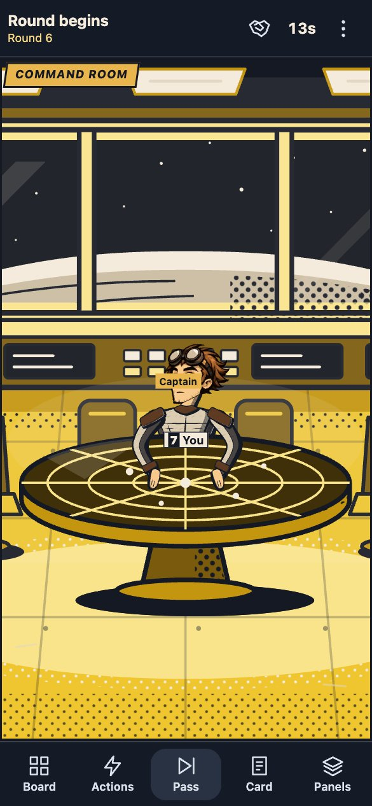
The build
How each side was drawn
The pack: /design/phone-ui/prototype/index.html?room=command-room&s=room&state=own&safe=47%2C34
The build: /?scenario=alien&count=9&tuple=phone
Hospital sheet 23
11 November 2026:DiffersThe worst case: the ward small at the top over an empty band, the patients tiny. The “Hospital panel” control is missing.
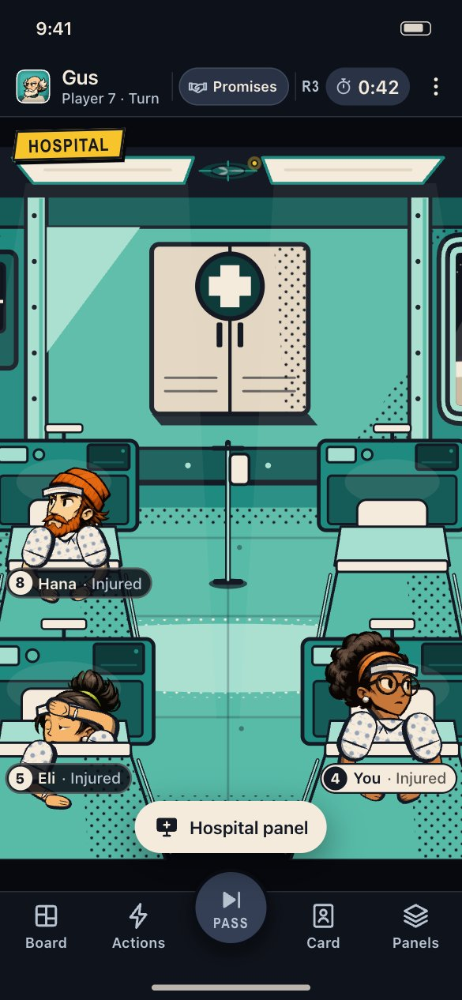
The pack
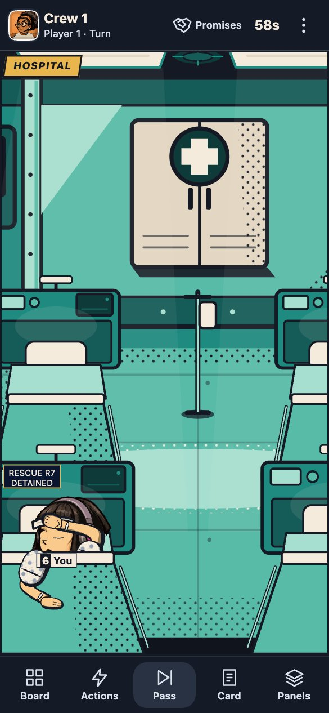
The build
How each side was drawn
The pack: /design/phone-ui/prototype/index.html?room=hospital&s=room&safe=47%2C34
The build: /?scenario=hospital&count=9&tuple=phone
Smallest phone, Largest text sheet 56
11 November 2026:DiffersAt 320 × 568 with 200 % text, the tab labels break mid-word (“Boar/d”), the result names no one, and the top bar takes about 130 px, with the clock on a row of its own. The design keeps whole labels, the result’s headline, and a two-line title with the clock beside it.
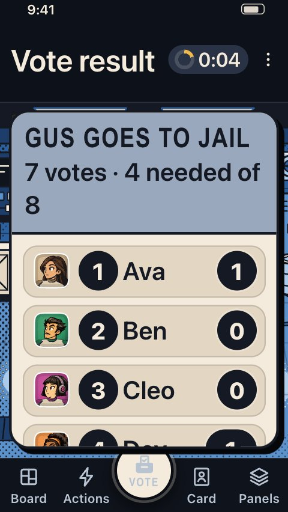
The pack
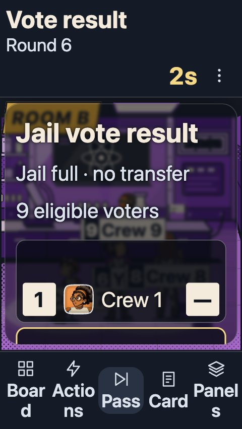
The build
How each side was drawn
The pack: /design/phone-ui/prototype/index.html?s=result&outcome=PLAYER_JAILED&safe=20%2C0&text=2
The build: /?scenario=vote&count=9&tuple=phone
Your turn
Pass sheet 27.3
11 November 2026:DiffersOnly “Pass?”. The design says “Pass your turn? The turn goes to Eli · Player 5” and that your move stays open.
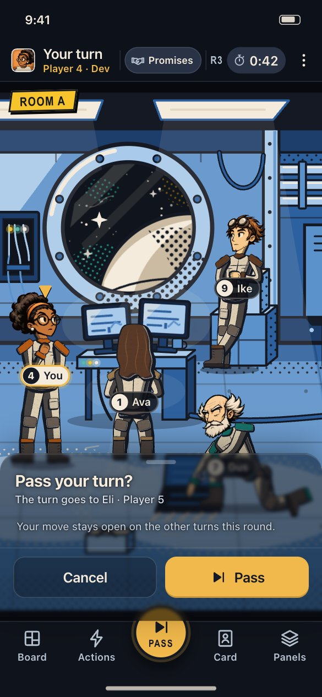
The pack
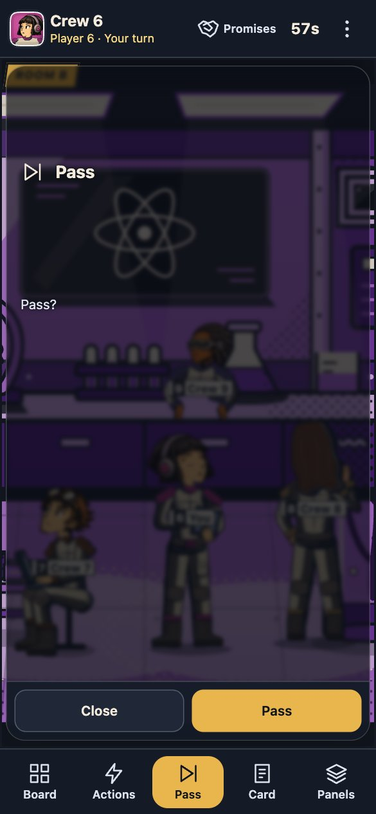
The build
How each side was drawn
The pack: /design/phone-ui/prototype/index.html?room=room-a&s=room&state=pass&safe=47%2C34
The build: /?scenario=board&count=9&tuple=phone, then [["tap","#planet-pass"],["wait",600]]
Actions sheet 28
11 November 2026:DiffersOnly the offered actions, one tall row each, in an otherwise empty sheet. The design shows every action of your role as a tile with its state: 2 injections, Once a round, From Round 4.
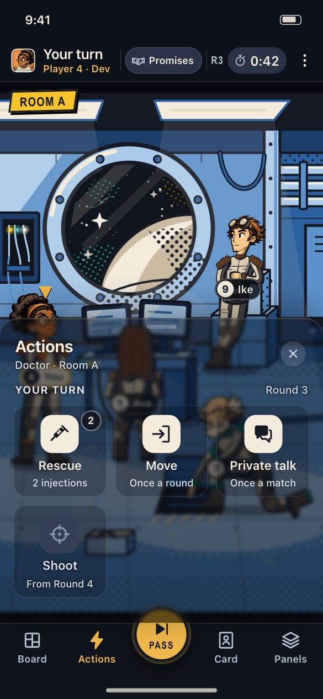
The pack
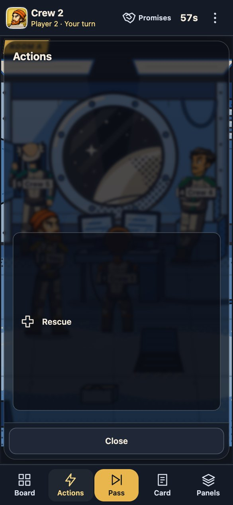
The build
How each side was drawn
The pack: /design/phone-ui/prototype/index.html?active=4&role=Doctor&s=actions&safe=47%2C34
The build: /?scenario=doctor&count=9&tuple=phone, then [["tap","#planet-nav-actions"],["wait",600]]
Choosing a target sheet 29
11 November 2026:CloseTargets are the people where they stand. There is no “Rescue · Choose a player · Cancel” bar, and the centre Pass becomes “×”.
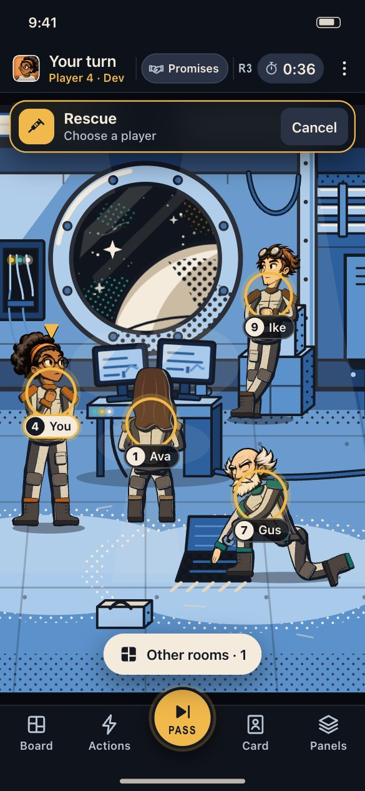
The pack
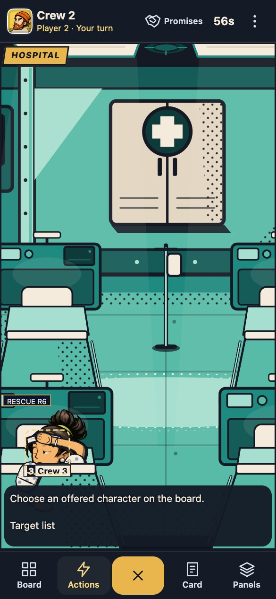
The build
How each side was drawn
The pack: /design/phone-ui/prototype/index.html?act=rescue&active=4&role=Doctor&s=actions&state=targeting&safe=47%2C34
The build: /?scenario=doctor&count=9&tuple=phone, then [["tap","#planet-nav-actions"],["wait",500],["tapText","Rescue"],["wait",700]]
Check before Register sheet 29
11 November 2026:DiffersOnly “Rescue — Player 3?”. The design shows the person and what the action costs and does: “Uses 1 of 2 shared injections”, and when it resolves.
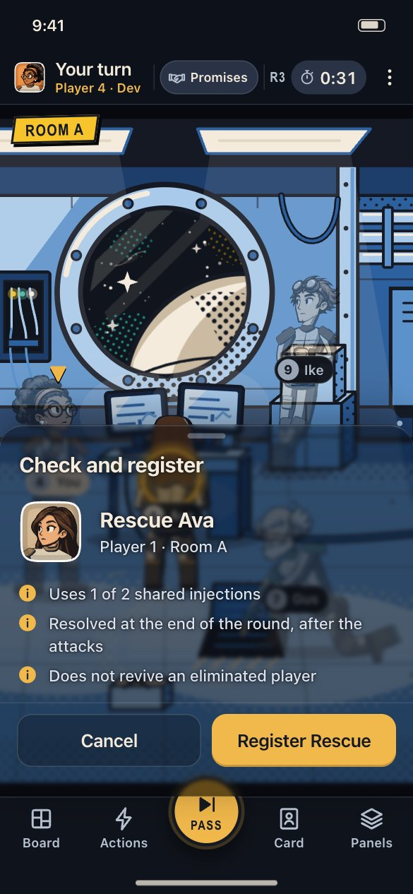
The pack
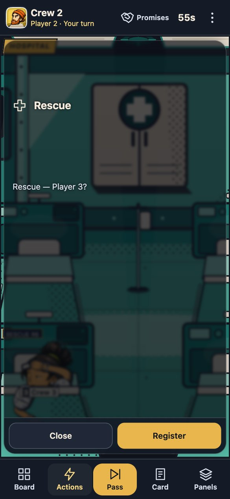
The build
How each side was drawn
The pack: /design/phone-ui/prototype/index.html?act=rescue&active=4&role=Doctor&s=actions&state=confirm&target=1&safe=47%2C34
The build: /?scenario=doctor&count=9&tuple=phone, then [["tap","#planet-nav-actions"],["wait",500],["tapText","Rescue"],["wait",600],["tapText","Crew|Player \\d",{"exclude":"nav|top|pass"}],["wait",600]]
After Register sheet 29.1
11 November 2026:Differs“Registered. Resolution is pending.” (Scan says “Waiting for the authoritative view.”) The design says what will happen and when, with a REGISTERED stamp and a time line.
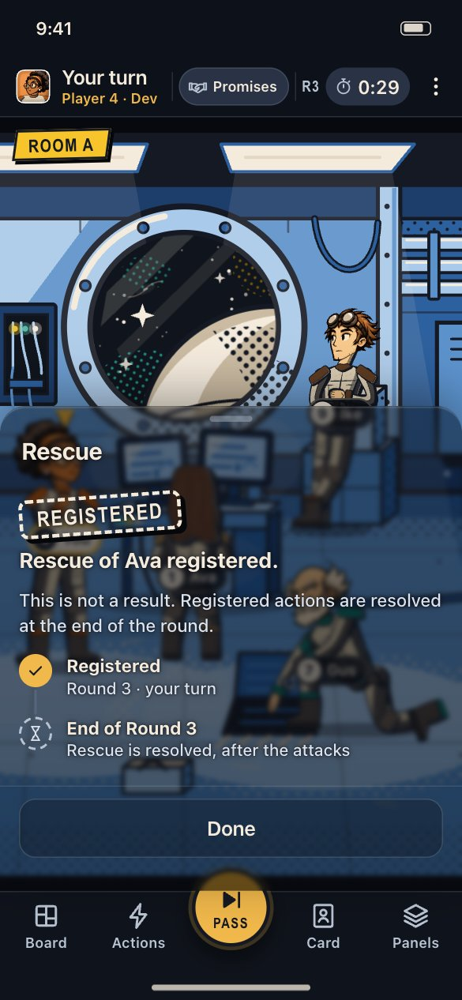
The pack
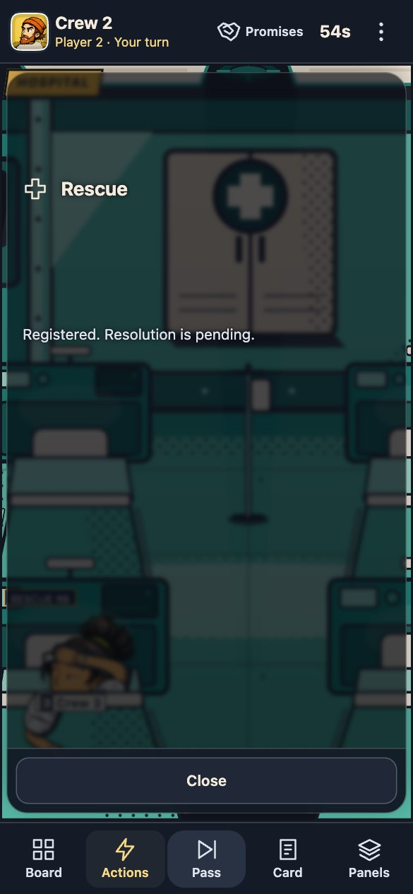
The build
How each side was drawn
The pack: /design/phone-ui/prototype/index.html?act=rescue&active=4&role=Doctor&s=actions&state=registered&target=1&safe=47%2C34
The build: /?scenario=doctor&count=9&tuple=phone, then [["tap","#planet-nav-actions"],["wait",500],["tapText","Rescue"],["wait",600],["tapText","Crew|Player \\d",{"exclude":"nav|top|pass"}],["wait",600],["tapText","^Register"],["wait",1200]]
Hacker: Scan sheet 42
11 November 2026:DiffersChoosing whom to scan opens the whole board, and the guess that follows is three plain buttons. The design keeps your room with a Scan bar, then puts the person and the guess on one card.
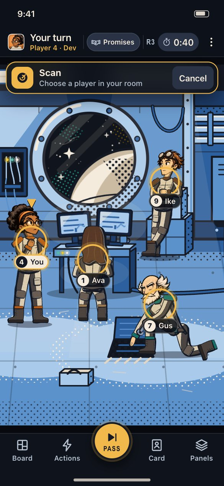
The pack
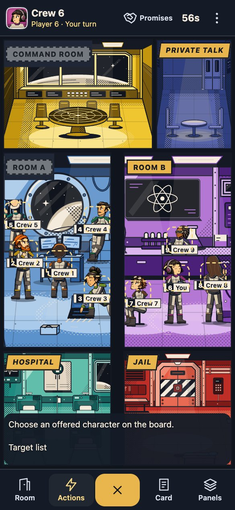
The build
How each side was drawn
The pack: /design/phone-ui/prototype/index.html?s=scan&state=target&safe=47%2C34
The build: /?scenario=hacker&count=9&tuple=phone, then [["tap","#planet-nav-actions"],["wait",500],["tapText","^Scan"],["wait",700]]
Hacker: final Code sheet 42
11 November 2026:DiffersNine “Player n” text buttons. The design uses the nine portraits with names and marks Pick 1–4.
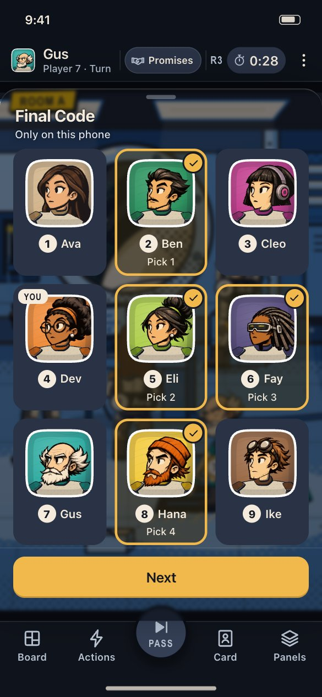
The pack
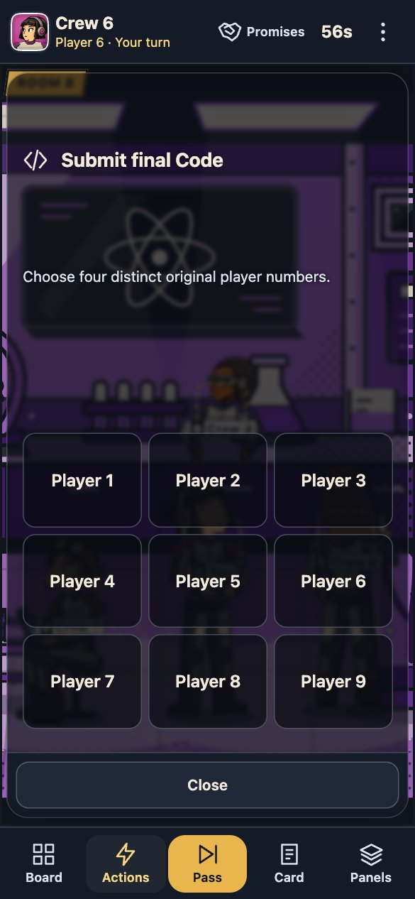
The build
How each side was drawn
The pack: /design/phone-ui/prototype/index.html?s=code&state=pick&safe=47%2C34
The build: /?scenario=hacker&count=9&tuple=phone, then [["tap","#planet-nav-actions"],["wait",500],["tapText","final Code"],["wait",700]]
Alien: Clone sheet 29.2
11 November 2026:DiffersThe “CLONE ACTIVE” stamp is drawn over its own sentence. The design confirms the Clone with an ACTIVE stamp and a time line.
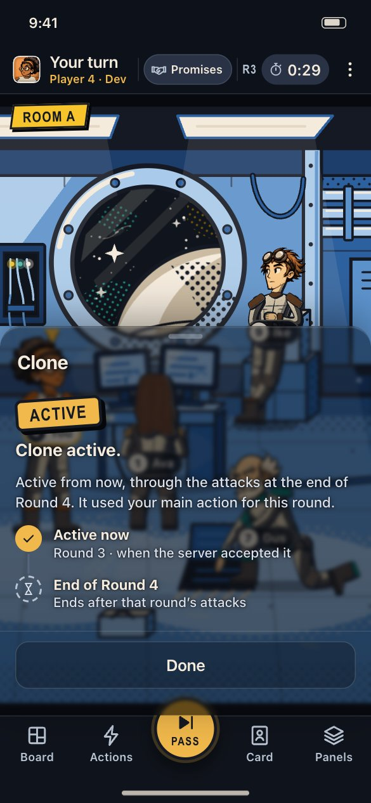
The pack
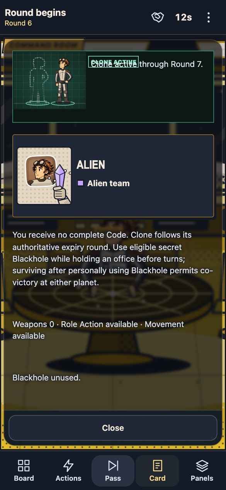
The build
How each side was drawn
The pack: /design/phone-ui/prototype/index.html?act=clone&active=4&role=Alien&s=actions&state=registered&safe=47%2C34
The build: /?scenario=alien&count=9&tuple=phone, then [["tap","#planet-nav-card"],["wait",700]]
Card sheet 31
11 November 2026:DiffersA dark box of paragraphs. The design shows the large illustrated card with Card, Knowledge and Resources, and a Hide button.
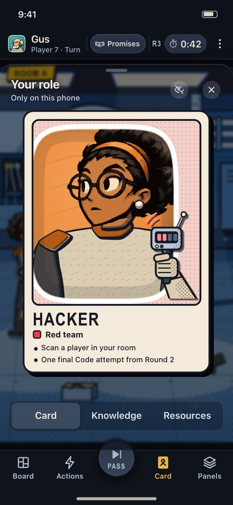
The pack
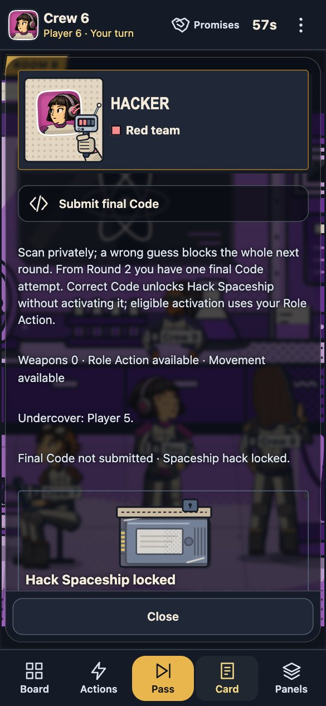
The build
How each side was drawn
The pack: /design/phone-ui/prototype/index.html?role=Hacker&s=card&safe=47%2C34
The build: /?scenario=board&count=9&tuple=phone, then [["tap","#planet-nav-card"],["wait",700]]
Panels and Promises
Panels sheet 32
11 November 2026:DiffersTall rows without explanations. The design’s rows say what each panel shows and who can use it, such as “Navigation · Captain and Officer only”.
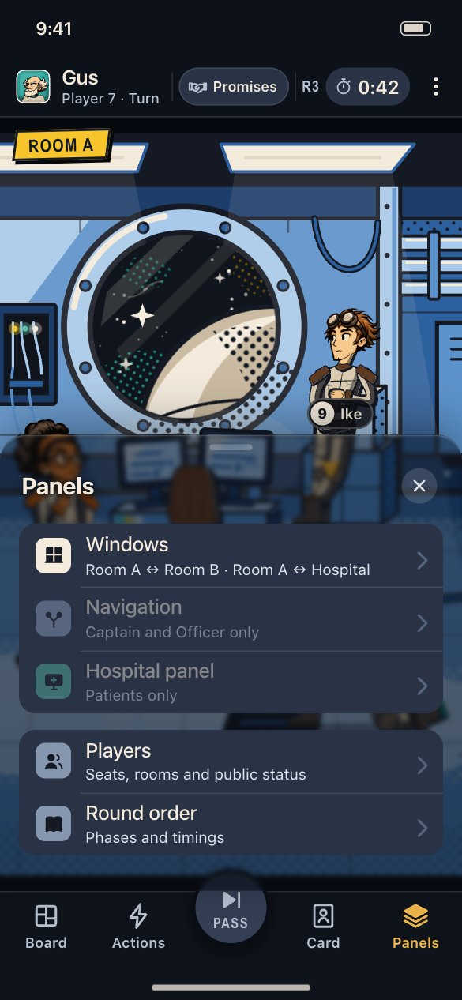
The pack
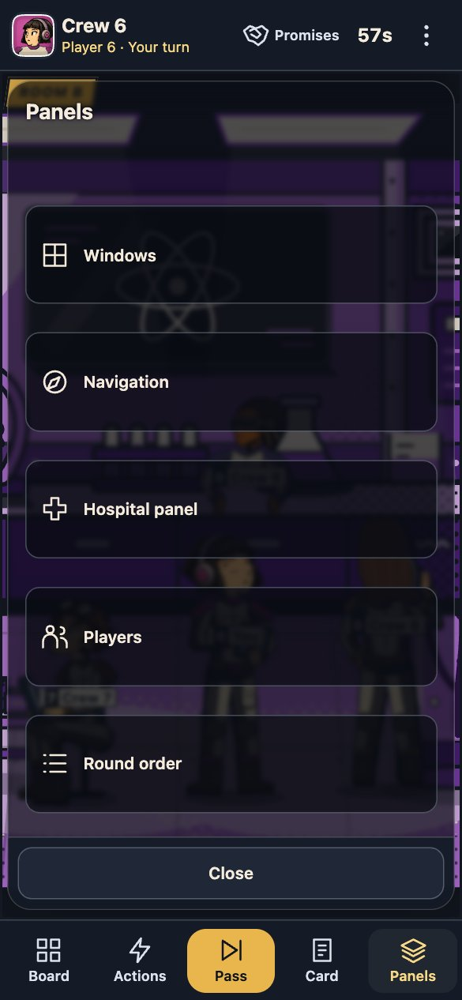
The build
How each side was drawn
The pack: /design/phone-ui/prototype/index.html?s=panels&safe=47%2C34
The build: /?scenario=board&count=9&tuple=phone, then [["tap","#planet-nav-panels"],["wait",600]]
Settings (⋮) sheet 32
11 November 2026:DiffersA checkbox and a drop-down under a folded line. The design has a switch with its explanation and Standard / Large / Largest.
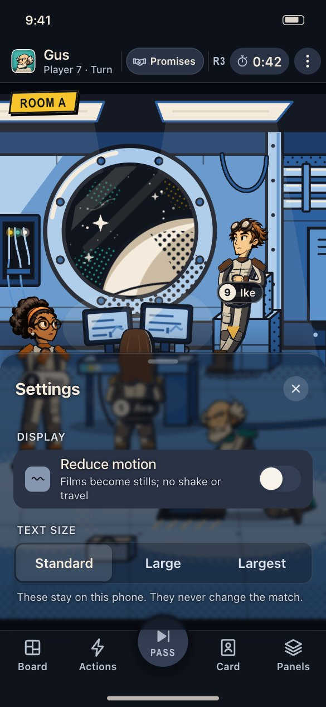
The pack
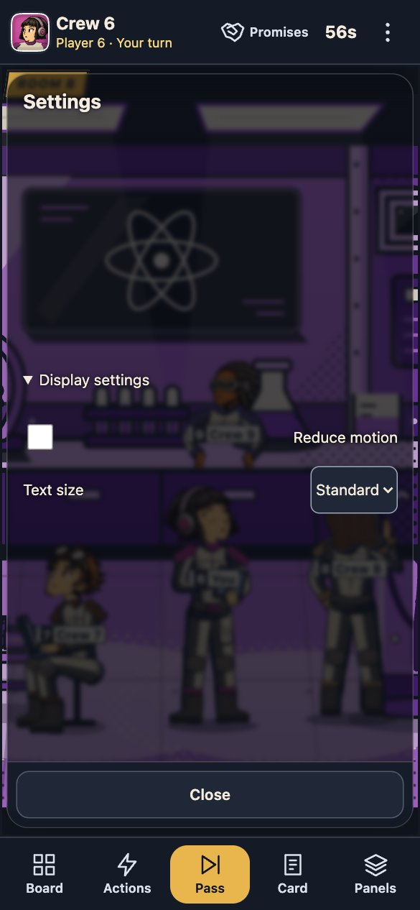
The build
How each side was drawn
The pack: /design/phone-ui/prototype/index.html?s=settings&safe=47%2C34
The build: /?scenario=board&count=9&tuple=phone, then [["tap","#planet-top-settings"],["wait",500],["tap","summary"],["wait",500]]
Players sheet 32
11 November 2026:DiffersPlain text lines (“Player 1 · Crew 1 · Room A · Healthy”). The design has portraits, names, Captain and Officer badges, and injuries.
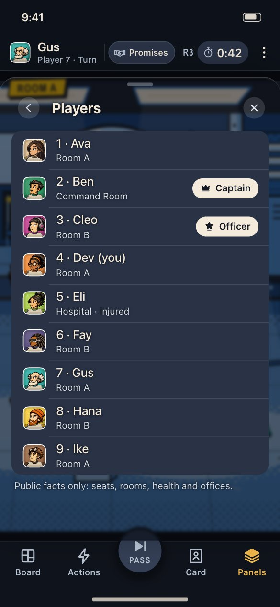
The pack
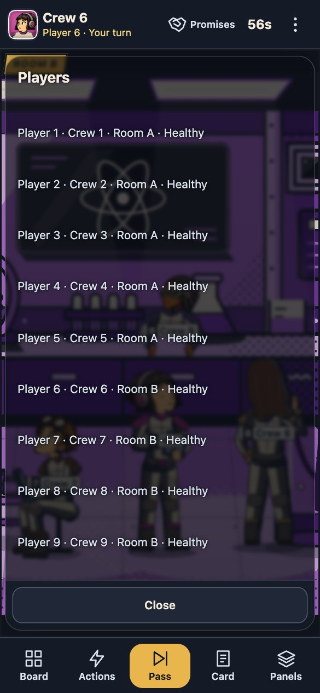
The build
How each side was drawn
The pack: /design/phone-ui/prototype/index.html?s=players&safe=47%2C34
The build: /?scenario=board&count=9&tuple=phone, then [["tap","#planet-nav-panels"],["wait",500],["tapText","^Players"],["wait",600]]
Round order sheet 32
11 November 2026:DiffersOne long sentence. The design lists each phase on its own row with its timing.
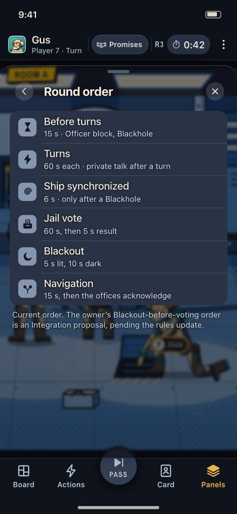
The pack
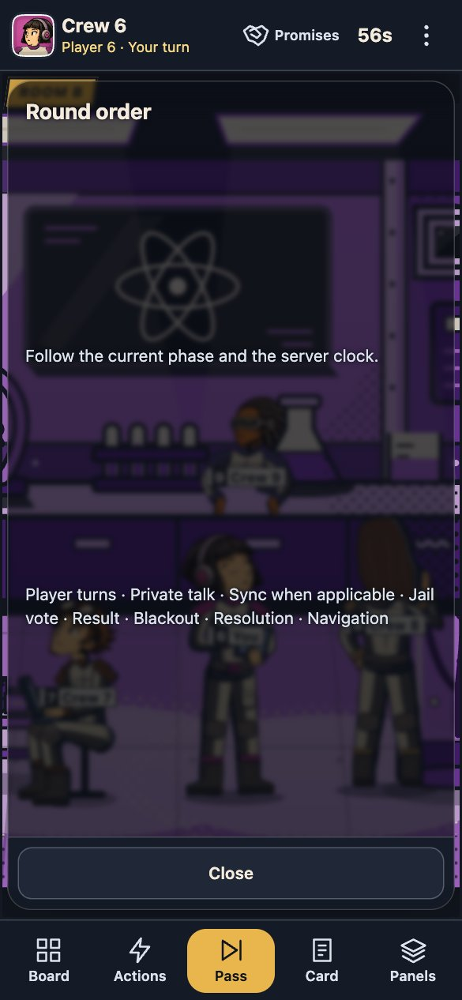
The build
How each side was drawn
The pack: /design/phone-ui/prototype/index.html?s=rules&safe=47%2C34
The build: /?scenario=board&count=9&tuple=phone, then [["tap","#planet-nav-panels"],["wait",500],["tapText","^Round order"],["wait",600]]
Windows sheet 34
11 November 2026:CloseWindow pairs, the drawings and “Unverified” match. Player numbers instead of names.
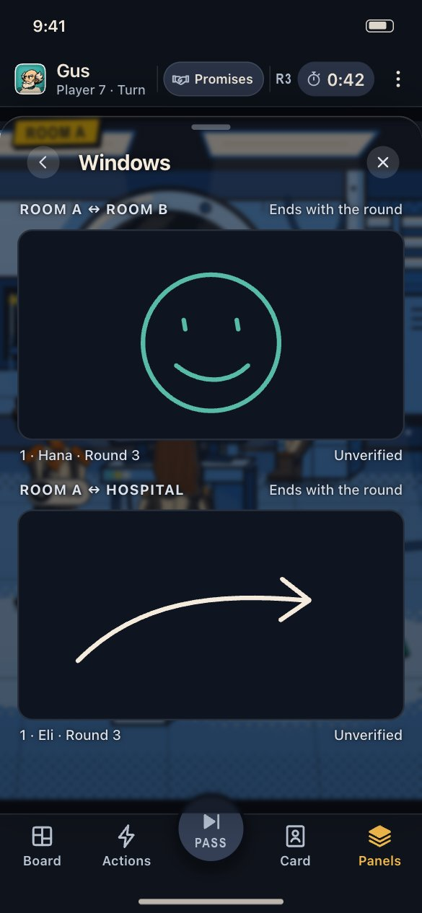
The pack
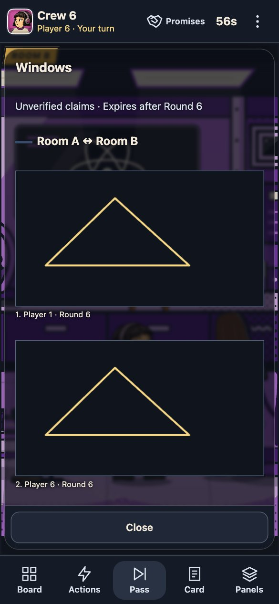
The build
How each side was drawn
The pack: /design/phone-ui/prototype/index.html?s=windows&state=view&safe=47%2C34
The build: /?scenario=windows&count=9&tuple=phone, then [["tap","#planet-nav-panels"],["wait",500],["tapText","^Windows"],["wait",700]]
Hospital panel sheet 43
11 November 2026:CloseThe keypad 1–9 and its one-attempt rule match.
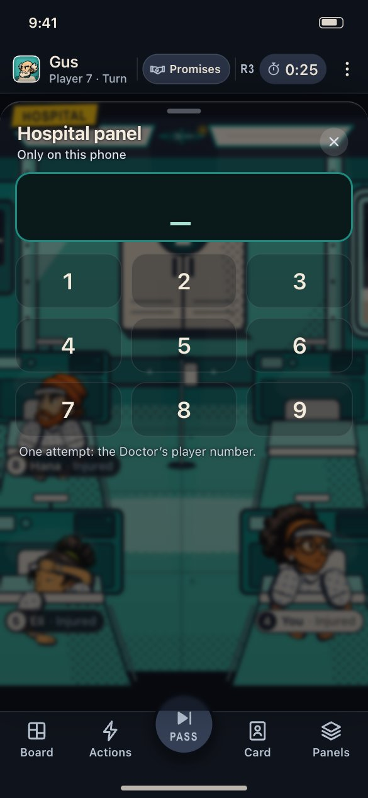
The pack
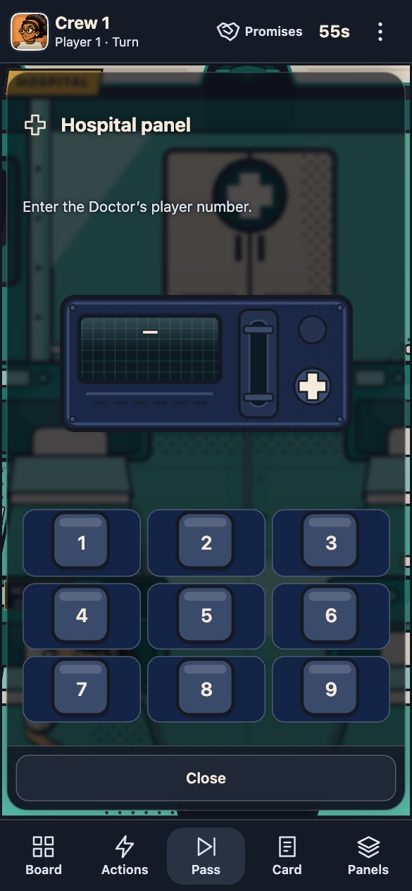
The build
How each side was drawn
The pack: /design/phone-ui/prototype/index.html?s=panel&state=enter&safe=47%2C34
The build: /?scenario=hospital&count=9&tuple=phone, then [["tap","#planet-nav-panels"],["wait",500],["tapText","Hospital panel"],["wait",600],["tapText","Hospital panel",{"scope":".planet-sheet"}],["wait",700]]
Offer a Promise sheet 33
11 November 2026:DiffersIt first asks you to pick your private-talk partner, who is already known. The design goes straight to “Offer to Ava” and the six kinds.
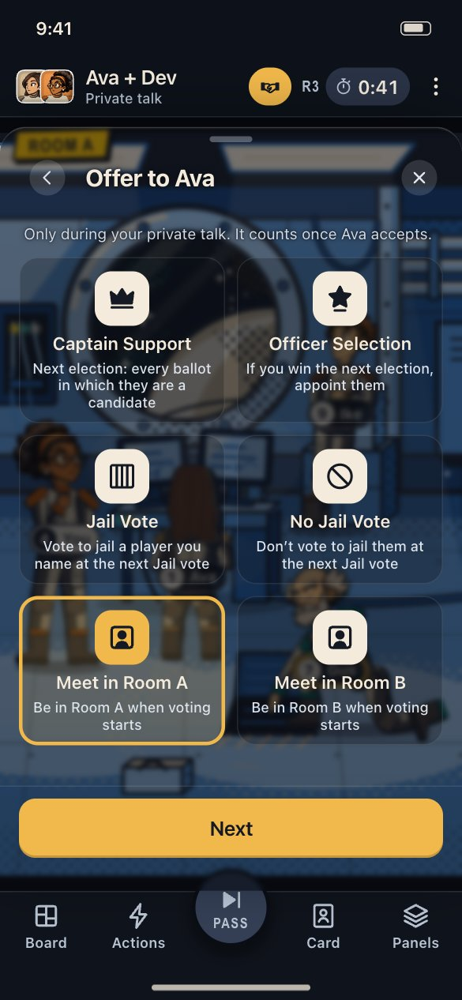
The pack
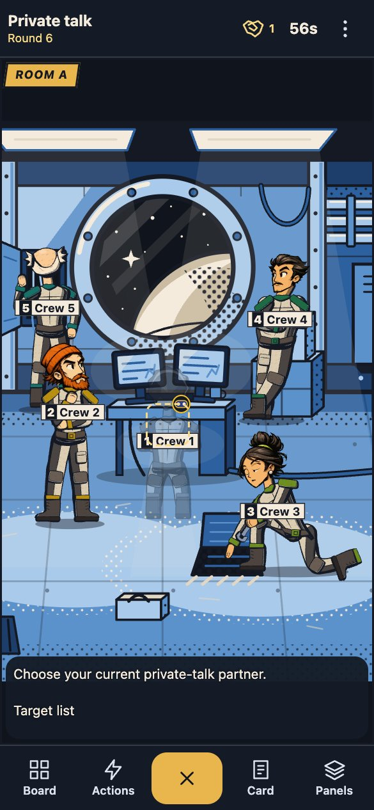
The build
How each side was drawn
The pack: /design/phone-ui/prototype/index.html?s=promises&state=kinds&safe=47%2C34
The build: /?scenario=promises&count=9&tuple=phone, then [["tap","#planet-top-promises"],["wait",600],["tapText","Offer a Promise"],["wait",700]]
A Promise offered to you sheet 33
11 November 2026:DiffersA line of counts and Accept / Decline rows. The design shows the offer as a card with its exact terms, then Decline or Accept.
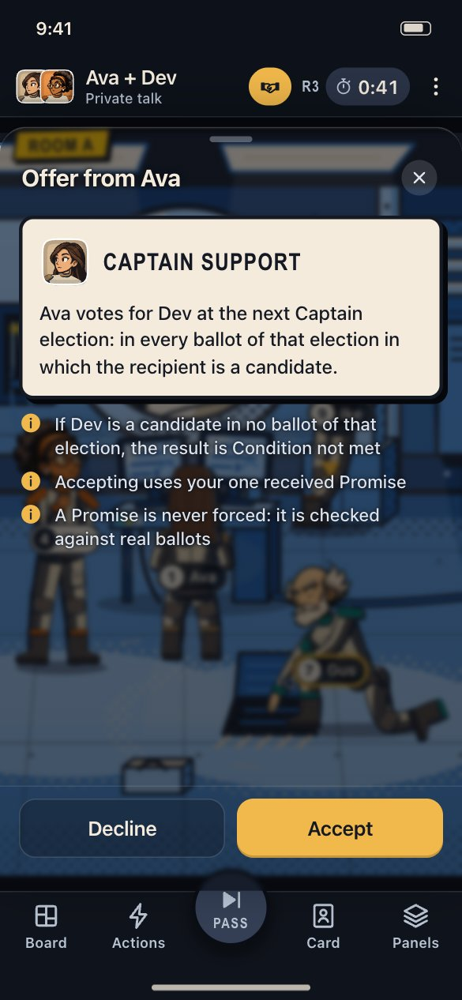
The pack
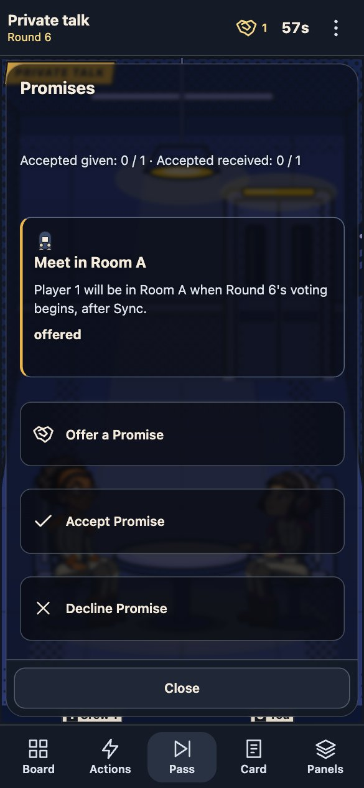
The build
How each side was drawn
The pack: /design/phone-ui/prototype/index.html?s=promises&state=incoming&safe=47%2C34
The build: /?scenario=promises&count=9&tuple=phone, then [["tap","#planet-top-promises"],["wait",600]]
Promise results sheet 33.1
11 November 2026:CloseCards with Pending and Not fulfilled, within the quota. Player numbers instead of names and portraits.
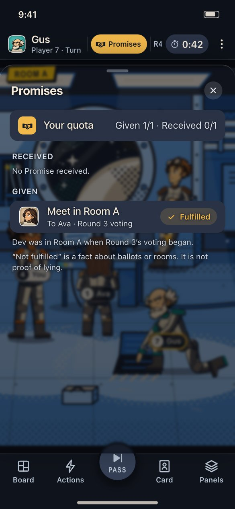
The pack
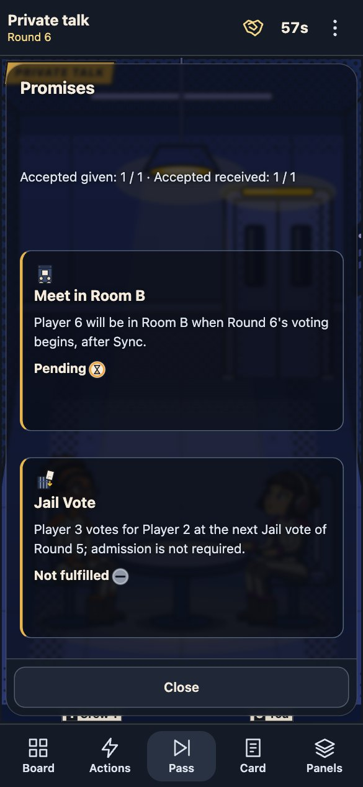
The build
How each side was drawn
The pack: /design/phone-ui/prototype/index.html?case=fulfilled&s=promises&state=results&safe=47%2C34
The build: /?scenario=promise-results&count=9&tuple=phone, then [["tap","#planet-top-promises"],["wait",600]]
Votes and offices
Jail vote sheet 35
11 November 2026:CloseThe 3 × 3 roster and Abstain.
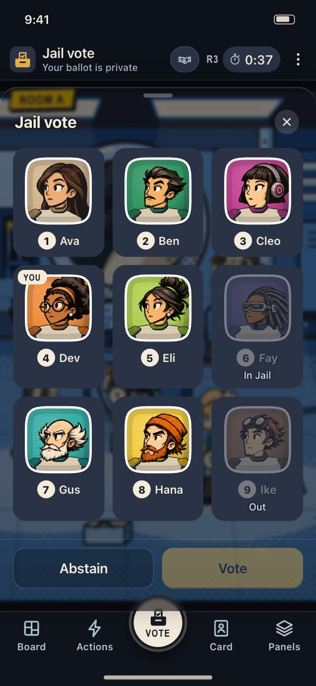
The pack
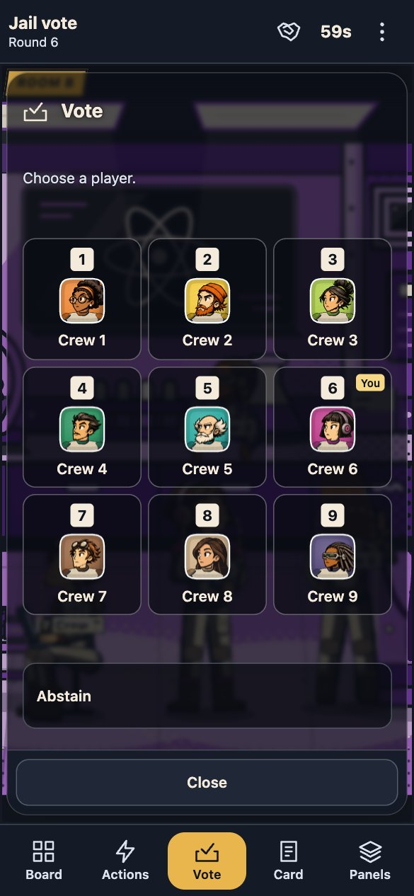
The build
How each side was drawn
The pack: /design/phone-ui/prototype/index.html?kind=jail&s=vote&safe=47%2C34
The build: /?scenario=board&count=9&tuple=phone, then [["eval","window.planetHarness.openJailVote()"],["wait",900],["tap","#planet-pass"],["wait",700]]
Jail result sheet 38
11 November 2026:DiffersIt names no one (“Jail full · no transfer”), sits on dark glass, and shows zero as “–”. The design names the outcome on the paper card, “GUS CHOSEN · JAIL FULL”, with its stamp.
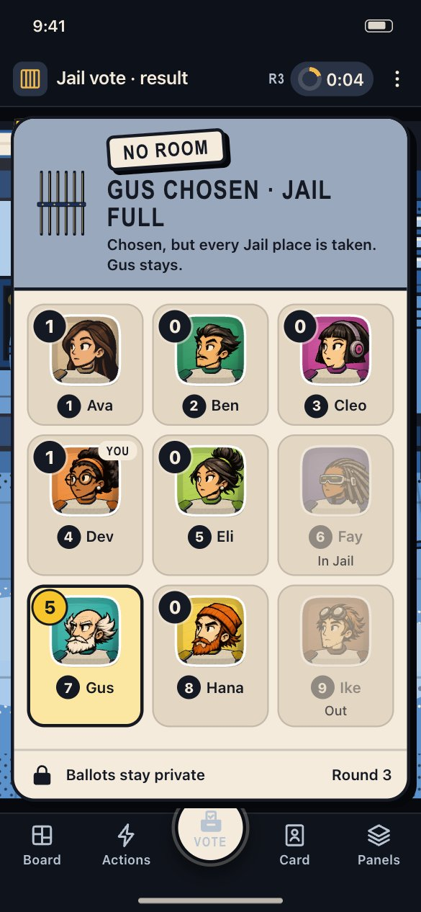
The pack
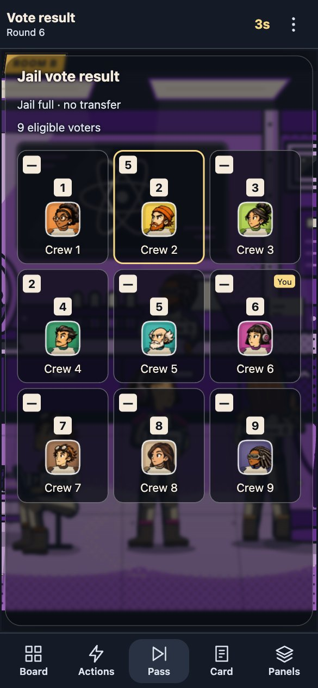
The build
How each side was drawn
The pack: /design/phone-ui/prototype/index.html?outcome=JAIL_FULL&s=result&safe=47%2C34
The build: /?scenario=vote&count=9&tuple=phone
Officer appointment sheet 40
11 November 2026:DiffersA row inside Actions. The design opens “Choose your Officer” by itself for its 30 seconds, with portraits and the reason someone can’t be chosen.
The packThe build
How each side was drawn
The pack: /design/phone-ui/prototype/index.html?s=captain&state=appoint&safe=47%2C34
The build: /?scenario=appointment&count=9&tuple=phone, then [["tap","#planet-nav-actions"],["wait",700]]
Officer’s block sheet 40
11 November 2026:DiffersA row inside Actions. The design opens “Block movement” by itself, with portraits, Skip and Block.
The packThe build
How each side was drawn
The pack: /design/phone-ui/prototype/index.html?s=officer&state=pick&safe=47%2C34
The build: /?scenario=block&count=9&tuple=phone, then [["tap","#planet-nav-actions"],["wait",700]]
Navigation tie sheet 41
11 November 2026:DiffersThe route map matches, but the choice is in Panels, then Navigation, then “Choose tie direction”. The design shows Blue and Red to the offices directly.
The packThe build
How each side was drawn
The pack: /design/phone-ui/prototype/index.html?s=nav&state=tie&safe=47%2C34
The build: /?scenario=tie&count=9&tuple=phone, then [["tap","#planet-nav-panels"],["wait",500],["tapText","^Navigation"],["wait",700]]
Navigation, for everyone sheet 41
11 November 2026:DiffersA line of text in Panels. The design shows everyone the ship travelling for the same 15 seconds.
The packThe build
How each side was drawn
The pack: /design/phone-ui/prototype/index.html?s=nav&state=public&safe=47%2C34
The build: /?scenario=board&count=9&tuple=phone, then [["tap","#planet-nav-panels"],["wait",500],["tapText","^Navigation"],["wait",600]]
Blackout, dark sheet 30
11 November 2026:CloseThe dark room with every position as a ring, and the Disabler choosing a position.
The packThe build
How each side was drawn
The pack: /design/phone-ui/prototype/index.html?s=blackout&state=dark&safe=47%2C34
The build: /?scenario=blackout&count=9&tuple=phone
Host and connection
Host controls in a match sheet 15
11 November 2026:DiffersInside Settings, as “Check server deadline”, “Run eligible bots” and “Issue recovery for Player 6”. The design has its own sheet in plain words with a code for each seat.
The packThe build
How each side was drawn
The pack: /design/phone-ui/prototype/index.html?s=host-controls&safe=47%2C34
The build: /?scenario=board&count=9&tuple=phone, then [["eval","(() => { const h = window.planetHarness, v = structuredClone(h.value); v.isHost = true; return h.replace(v); })()"],["wait",600],["tap","#planet-top-settings"],["wait",500],["reveal","Check server deadline"],["wait",400]]
Reconnecting sheet 45
11 November 2026:DiffersThe room disappears behind “Connection interrupted. Your command recovery is retained.” The design keeps the last room, dimmed, with “Connection lost” and Retry.
The packThe build
How each side was drawn
The pack: /design/phone-ui/prototype/index.html?room=room-a&s=room&state=reconnecting&safe=47%2C34
The build: /?scenario=board&count=9&tuple=phone, then [["eval","window.planetHarness.setReadFailure(true)"],["eval","window.planetHarness.app.session.refresh()"],["wait",2500]]
End of the match
End of the match sheet 44
11 November 2026:DiffersA text list on glass. The design shows the planet and the ship, the “RED WINS” stamp, and every player’s portrait with their role.
The packThe build
How each side was drawn
The pack: /design/phone-ui/prototype/index.html?s=end&winner=Red&safe=47%2C34
The build: /?scenario=finished&count=9&tuple=phone